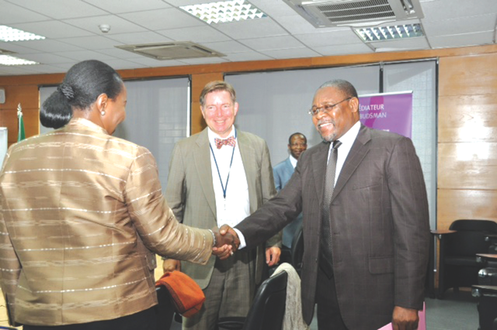
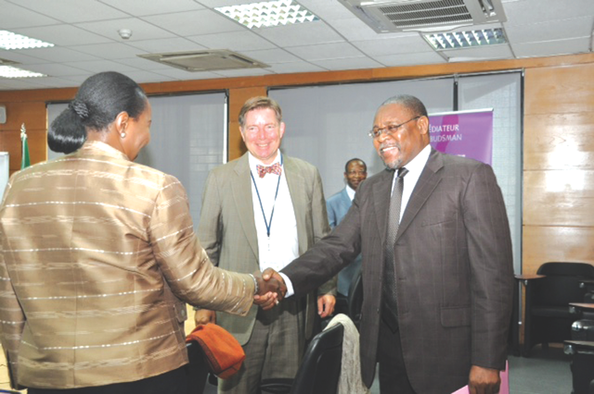

Candidat
Le Candidat

M. Sakala, de nationalité zimbabwéenne, a été retenu parmi trois candidats par un panel de ministres de la SADC pour être leur candidat désigné pour le poste de Président de la Banque Africaine de Développement au cours de l’élection du 28 Mai 2015. Au cours des 31 ans qu'il a passé au sein de la Banque, il a énormément voyagé à travers le continent et à l'étranger, établissant partout le dialogue, supervisant la réalisation de projets sur le terrain et échangeant idées et expériences avec une gamme très large de parties prenantes.
M. Sakala a une parfaite maîtrise de l'anglais et esttrès confortable dans l'usage du français comme langue de travail.
Son engagement, son habilité, son efficacité et son rendement lui ont permis de monter continuellement en grade dans la catégorie des professionnels de la BAD:
- Vice-président, Programmes et politiques de pays et régions (Avril 2012-Octobre 2014).
- Vice-président par intérim des Services de la Banque (Janvier-Juin 2012)
- Directeur, Réformes, Budget et Stratégie (Mars 2007-Janvier 2012).
- Economiste en chef, Vice-présidence chargée des Opérations (Septembre 2006- Février 2007).
- Représentant-résident au Nigéria (Décembre 2002- Septembre 2006).
- Chef de division, secteurs sociaux des régions Nord, Est et Sud (Février 1996- Novembre 2002).
- Chargé principal de programmes (1992- 1996).
- Assistant/Chargé principal des prêts (1983-1991).
Il a passé les derniers 18 ans dans divers postes de direction. Il a animé plusieurs fonctions stratégiques dans les domaines des opérations, de la gouvernance et des réformes de l’institution. Toutes positions qui lui ont façonné un profile très singulier et qui l’ont doté d’une fabuleuse mémoire de l’institution. Parmi sa vaste expérience du travail sur le terrain, il faut souligner les quatre années passées au Nigéria, le plus important actionnaire de la Banque, en qualité de Représentant-résident.
En conformité avec l’esprit de Maputo relatif aux directives régissant les candidatures internes, il a démissionné de la BAD en Octobre 2014. Il occupait alors la fonction officielle de Vice-Président en charge des Programmes pays et régions.
VISION
Sa vision est celle d’une Afrique confiante, intégrée et prospère.
Elle s’inspire de la Vision des Pères fonda teurs de la BAD et du Programme 2063 de l’Union Africaine.
MISSION
Soutenir et Améliorer la Transformation de la Banque Africaine de Développement et de l’Afrique.
Ce qui consiste à consolider et peaufiner la stratégie, les réformes et les initiatives opérationnelles actuelles afin de s’assurer que la Banque continue d’être compétente et proactive vis-à-vis des intérêts de ses clients (y compris dans des situations de fragilité et d’urgence comme c’est actuelle ment le cas avec la fièvre Ebola) et s’assurer quelle parvient effectivement à des résultats inclusifs et durables.
La Banque doit poursuivre son engagement de se situer au cœur de la Transformation de l’Afrique et d’être la voix respectée de celle-ci sur les questions de développement économique et social. Par dessus tout, elle doit renforcer son statut de première institution de développement de l’Afrique.
La Banque doit conduire ses opérations avec pour préoccupations premières, l’efficacité et la rentabilité. Pour ce faire, le programme de décentralisation va devoir nécessiter d’un effort de rationalisation plus important.
Au cours des cinq prochaines années, la nouvelle Equipe de Direction devra, sous sa houlette, se battre pour:
- la consolidation de la Stratégie Décennale de la Banque Africaine de Développement (2013-2022). Si cela devait s’avérer nécessaire, celle-ci sera mise davantage en adéquation, sans par ailleurs rien sacrifier, avec l’Agenda 2063 de l’Union Africaine et avec les Objectifs du Développement Durable (ODD) de l’après 2015. Des appréciations et révisions d’étape seront régulièrement entreprises.
- le renforcement de la performance et de la bonne gouvernance afin de garantir la qualité des résultats réalisés par rapport à la Stratégie décennale.
- l'amplification du dialogue, la multiplication des réseaux de contacts et des voies et moyens de communication au sein de la Banque elle même, avec l’ensemble des actionnaires et avec d’importants centres d’excellence.
- La confirmation et l’accroissement du rôle de la BAD comme une voix crédible et respec tée en Afrique et dans le monde et comme un centre-ressources de premier ordre sur les questions de développement de l’Afrique.

Les domaines d’attention Speciale du Candidat
1. Eliminer le déficit des infrastructures:
c’est la priorité des priorités dans le futur immédiat. Une attention particulière sera accordée aux défis de l’urbanisation galo pante, de la promotion du commerce intra africain et de la transformation des économies rurales. Une plus grande mobilisation des ressources propres de l’Afrique sera essen tielle.
2. Intégration régionale:
approfondir le dialogue et cultiver des relations de confiance avec les institutions régionales tout en travaillant à leur consolidation. Une définition rigoureuse des priorités en matière de grands travaux ou de mesures institutionnelles devra être de rigueur
3. Fragilité et conflits:
identifier les acteurs et facteurs principaux de ces situations en collaboration étroite avec une Union Africaine efficace et pertinente et les organismes régionaux. Aider à renforcer la création d’institutions efficaces, l’égalité devant la loi, la promotion d’espaces politiques et économiques afin de susciter un sens plus grand d’appartenance et d’inclusion parmi les différents groupes de population.
4. Développement du secteur privé:
accélérer le développement d’un secteur privé africain, crédible et résilient grâce à la promotion d’un environnement favorable et d’institutions et de mécanismes efficaces de financement des PME. Par ailleurs accorder un soutien robuste au partenariat public-privé (PPP).
5. Egalité des genres:
travailler à une meilleure appréciation des raisons qui conduisent aux préjudices, à l’exclusion et à la violence entre les genres au sein de différents communautés et pays. S’engager aux côtés des acteurs clé, identifier les actions à entreprendre et soutenir leur mise en œuvre effective.
Questions Générales
L'Afrique des économies vertes
L'Afrique verte est un agenda consensuel. Cela requiert un dialogue permanent sur les options et les mesures pour assurer une adaptation optimale e t des résultants concluants.

Bonne gouvernance et mobilisation des ressources
Les contraintes fiscales au plan mondial et les immenses besoins de financement, notamment pour les infrastructures, exigent que l'Afrique fasse davantage pour elle-même. Les efforts de la Banque et des Etats membres pour une meilleure mobilisation des ressources domestiques, pour une gestion prudente et équitable des ressources naturelles et pour la création d'un environnement attrayant pour les investisseurs locaux, de la diaspora et du secteur privé étrangers devront être décuplés.
Décentralisation
Des progrès significatifs ont été faits pour accroitre la présence physique de la Banque auprès de ses clients. De sérieux efforts doivent maintenant permettre d'améliorer le niveau de participation au dialogue sur les politiques, le travail d'analyse pertinente au niveau des pays, la coordination des donateurs, la qualité du portefeuille et le développement des affaires.
Le personnel
Au centre des résultats attendus de la Banque se situe son personnel diversifié, motivé et passionné par la transformation de l'Afrique. Un personnel empreint d'humilité et capable de se mettre à l'écoute du client. Un personnel également doté d'un grand sens du travail en équipe, de professionnalisme, de transparence, d'intégrité et d'excellence. Un personnel qui s'applique à comprendre l'Afrique mieux que tout autre agent de développement. Ce sont là, les standards de travail et de comportement que la nouvelle direction devra renforcer.
Ce qu’apporte le Candidat de la SADC
- Une passion dévorante pour la Transformation de l’Afrique.
- Une très grande connaissance des pays- membres régionaux.
- Une connaissance approfondie de la Banque.
- Un bilan éloquent et réel de travaux d’innovation, de supervision et de mise en œuvre de réformes essentielles au sein de la Banque et de ses opérations.
- Des aptitudes réelles pour consulter, écouter et travailler en équipe.
 

BAD
La Banque Africaine de Developpement
Au mois de novembre 2014, la BAD a eu cinquante ans d'existence. Ses Pères fondateurs avaient la Vision d'une Afrique intégrée et prospère. C'est dans ce cadre qu'ils ont créé la Banque pour permettre le développement économique et de progrès social durable de tous les pays africains à la fois individuellement et dans leur ensemble.
La Banque a œuvré ces longues années pour accomplir cette mission. Aujourd'hui sa solidité financière est de notoriété; elle dispose d'un modèle et de procédures d'affaires sains; des priorités opérationnelles bien articulées et affiche des résultats positifs toujours en progression. La banque est aussi reconnue pour être un centre-ressources et une voix crédible sur les. questions de développement en Afrique.
La BAD est de manière indiscutable, au centre de la Transformation de l'Afrique. Elle doit garder le cap, faire mieux avec des résultats durables.
Interview
Interview avec le IC Publications
1. Quelle serait la première mesure que vous prendriez si vous êtes nommé président de la BAD ?
Je vais m’assurer que chaque membre du personnel de la Banque a bien compris ma vision et ce que j’attends de chacun en terme de performance pour soutenir la transformation de la Banque et celle du Continent. Il est primordial de s’entourer d’une équipe qui gagne et qui est motivée par l’obligation de résultats. Ca l’est en particulier au niveau des directeurs et vice-présidents. Et la bonne équipe doit avoir des compétences diverses et variées et des aptitudes pour le travail en équipe.
Sur le plan pratique, cela va nécessiter des réglages très précis au niveau de l’organisation et une bonne communication à l’endroit à la fois des partenaires internes et externes. Par conséquent, je rencontrerai les membres de la haute direction de la Banque de même que les membres du Conseil d’Administration. J’échangerai avec eux sur davantage de points de ma vision et recueillerai leurs avis sur les actions que la Banque devra mener en priorité pour se maintenir sur sa trajectoire et progresser tout en restant proactive vis-à-vis de l’environnement à la fois dynamique et versatile de l’Afrique.
2. La meilleure raison de voter pour vous ?
Cela suppose de comprendre d’abord les raisons de ma candidature.
Je suis persuadé que le plus important défi que les gouverneurs devront relever au moment de voter, et cela vaut aussi pour la nouvelle équipe de direction, sera de trouver la manière la plus rentable pour la mise en œuvre effective de la Stratégie et de plusieurs autres initiatives importantes également sur la table. Cela nécessite à la fois une consolidation et des innovations bien choisies et soigneusement élaborées.
Je pense que ma passion à contribuer pour la transformation de l’Afrique et;
1) ma longue expérience au sein de la Banque et dans de nombreux domaines clé telles les opérations, la gouvernance et les réformes qui ont valu à la Banque sa position actuelle;
2) ma vaste connaissance des pays africains, de leurs économies et de leurs dirigeants;
3) ma forte conviction que l’Afrique peut et a les moyens de faire davantage pour elle-même;
4) ma grande connaissance du milieu du développement international me confèrent le profil à la fois unique et idéal pour bâtir à partir des succès obtenus par Kaberuka et obtenir des résultats probants.
Par dessus tout, j’assurerai une transition en douceur avant de capitaliser et amplifier les retombées des acquis.
3. Qu’est-ce qu’il faut changer dans le logiciel de la BAD pour que l’Afrique décolle vraiment ?
D’abord et avant tout, je pense qu’il est de la responsabilité des dirigeants de chaque pays d’élaborer la feuille de route du développement de leur pays ou région et de la mettre en œuvre avec détermination.
La Banque doit, par conséquent, forger chez l’Africain la confiance dans sa capacité à élaborer et mettre en œuvre des programmes de développement et poursuivre son rôle de conseil.
En général, la direction de la Banque et le personnel doivent être informés en temps réel de ce qui fonctionne et de ce qui ne fonctionne pas, et être disposés à réviser leurs approches du développement si celles-ci entraient en conflit avec des idées nouvelles provenant des champions africains des réformes et du développement. La Banque doit se tenir prête pour jouer pleinement son nouveau rôle de passerelle entre les banques de développement à la mode ancienne et les nouveaux acteurs et autres institutions telles les BRICS.
En résumé, la Banque doit être plus engageante dans la prise de risque, passionnée, attentive et innovante avec par dessus tout une vision et un environnement institutionnel qui permette l’éclosion de ces qualités.
4. Un exemple concret où la BAD a fait ce que les autres banques n’ont pas fait et répondu ainsi aux besoins spécifiques de l’Afrique ?
Trois exemples:
1) réponses rapides et en temps opportun lors de la crise financière de 2008/09;
2) le partenariat avec l’Union Africaine sur la question du Soudan et du Soudan du Sud; et,
3) la création du Fonds Afrique 50 en réponse aux besoins de financement des infrastructures
5. L’Afrique va voir émerger des dizaines de nouveaux milliardaires ces prochaines années. Faut-il une taxe spéciale milliardaire pour financer le développement du continent?
Je présume que l’émergence de ces millionnaires sera le résultat d’un environnement davantage propice à l’éclosion des idées et permettant à tout citoyen le désirant, de créer de la richesse en toute légalité et avec le minimum d’entraves. Si c’est le cas, alors ce serait un développement positif à encourager afin de permettre à chaque village d’avoir ses millionnaires!
Plutôt que de placer les millionnaires dans la ligne de mire, la priorité devrait être de se doter de régimes fiscaux équitables et transparents. L’on devrait encourager un secteur privé résilient et florissant, créateur d’emplois et crédible dans la tenue de ses responsabilités sociales.
6. Comment faire exister vos propres idées et priorités du moment que la «Stratégie décennale 2013-2022» est en cours d’exécution?
Comme son nom l’indique, la Stratégie décennale a une durée de vie de 10 ans. Elle a été approuvée en 2013. Comme je l’ai indiqué dans l’exposé sur ma vision, elle indique les contours d’une feuille de route crédible pour la Banque, dans sa quête pour être au centre du programme de la transformation de l’Afrique. Et, je faisais partie de l’équipe de la haute direction qui l’a élaborée et proposée aux actionnaires.
La SD prévoit la nécessité de révisions périodiques et d’ajustements sur la base des résultats et l’avènement de nouvelles situations. Je prévois la première révision en 2016. Un moment tout indiqué pour un alignement plus ferme avec le Programme 2063 de l’Union Africaine et avec les Objectifs de Développement Durable de l’après 2015. Ce sera également l’occasion de tirer les leçons de l’épidémie Ebola. Toutefois, les infrastructures, l’intégration régionale et le secteur privé seront les domaines prioritaires au cœur de nos opérations, tandis que l’égalité des genres, les questions de la fragilité et de la sécurité alimentaire jouiront d’une attention toute spéciale.
En plus de la Stratégie, la révision va inclure le passage en revue des instruments dont nous disposons et de ceux à prendre.
7. Comptez-vous maintenir la logique de la décentralisation? Les 44 bureaux coûtent très cher et leur autonomie est très limitée: tout doit remonter au siège pour validation!
La décentralisation est coûteuse mais nécessaire. La problématique est de toujours mettre en perspective le seuil de rentabilité de l’opération et les résultats escomptés et réalisés. Je suis également conscient que nous n’avons pas rapporté et quantifié de manière appropriée nos réussites afin de systématiquement les capitaliser.
Une révision complète du programme de décentralisation, y compris les opérations des deux centres-ressources régionaux, avait été entreprise sous ma supervision avant mon départ de la Banque. Il m’est revenu que la Direction a, depuis, informé régulièrement le Conseil d’administration de l’avancement des travaux et des projets de restructuration. Je m’appuierai sur ces travaux et où cela s’avèrera utile et après une nécessaire consultation avec le Conseil d’administration, j’apporterai une contribution personnelle. Les règles du jeu seront clairement établies pour ce qui est des vice-présidents concernés.
8. La BAD est certes une Banque africaine, mais le poids des actionnaires non-africains est souvent décisif, y compris dans le choix du président. Cela ne vous dérange-t-il pas?
Pas du tout.
Un des motifs de fierté de l’Afrique, c’est précisément la procédure très transparente par laquelle est choisi le président de la Banque.
Il existe par ailleurs, des dispositions protégeant la voix et le leadership africains sans créer des dissensions inutiles quant au fait que le développement du continent est totalement l’affaire des Africains eux-mêmes.
Tout partenariat, mariage, repose sur la compréhension mutuelle et partagée de la ladite relation. Je pense que le programme de la Banque est bien compris de tous ses actionnaires et que tous travaillent pour atteindre les résultats escomptés. Je pense également que c’est cela qui influence leur choix du président à tout moment.
9. La BAD a la réputation d’être très lente entre le dépôt des dossiers et le décaissement. Comment accélérer les procédures afin d’éviter que d’autres institutions (Chine, Turquie, Brésil, etc.) ne viennent la concurrencer?
“... seul un sur trois de ces (grands) projets a été achevé à temps ou n’a pas connu de dépassement budgétaire. … certains chefs de projets géraient des projets multiples et de grande complexité. Les compétences en gestion de projets manquent. Il n’existe même pas de coordination centrale de tous les projets du Gouvernement.”
Ces lignes sont tirées de la préface du rapport annuel de l’Autorité des grands projets et ont pour auteur le ministre auprès du Premier Ministre britannique.
Cette citation n’a nullement l’intention de servir d’excuse ou de justifier les erreurs et retards attribués à la Banque et aux Clients. De plus, la taille des projets en question est de loin plus importante que celle des projets gérés par la Banque. Néanmoins, cela illustre le fait qu’il s’agit d’un sujet de préoccupation pour de nombreux gouvernements et pays. Et nous devrons apprendre de leurs expériences.
Plusieurs facteurs y concourent: comportements, procédures, complexité, capacités, intérêts spéciaux, projets mal ou insuffisamment élaborés, bureaucratie etc.
Il est par conséquent important de toujours mettre l’accent sur l’obligation de résultat au moyen de standards très élevés de professionnalisme, de travail d’équipe, de transparence, de responsabilité et d’éthique au niveau du personnel de la Banque. Les mêmes exigences sont valables pour les interlocuteurs du côté gouvernemental. Entretemps, des réformes institutionnelles ont été mises en œuvres ou sont sur le point de l’être et qui s’attaquent à plusieurs de ces points. Dans le processus, elles devront renforcer le degré de rationalisation de la gestion des projets et de ses aspects fiduciaires (surveillance des résultats financiers, des appels d’offre et des retombées en matière de développement).
Ces efforts devraient être poursuivis par le nouveau Président.
Concernant la Turquie et les pays du BRICS, ce sont évidemment des partenaires additionnels de l’Afrique qu’il faut saluer.
Les ressources et les expériences qu’ils apporteront, en soutien aux efforts de développement inclusif et soucieux de l’environnement sont les bienvenues. Nous devrions travailler ensemble.
10. Quelle est la femme ou l’homme vivant ou historique qui vous inspire le plus?

Photos

|


|

|

|